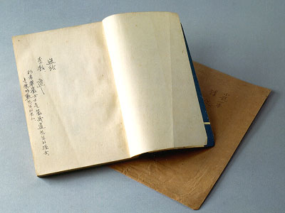

義助慰安婦
—— 李敖百件珍藏義賣藝術品（第89件）
品 名： I2. 胡適贈李敖「華嚴著《智慧的燈》」 預估價： 100 萬 成交價： 100 萬 說 明： 這部小說是華嚴女士（嚴復先生的孫女、葉明勳先生的夫人、辜振甫先生的小姨子）的作品，胡適先生在 1962 年將它送給了李敖（內頁有胡先生題字：小說一本請姚從吾先生轉李敖），當時胡適先生任中央研究院院長。李敖認為華嚴女士不妨考慮義買這本書，因為當年書剛出版時，胡適先生曾寫信給她告知預約了這本書，是要送一個人。華嚴女士大可將那封信和這本書作一結合。
